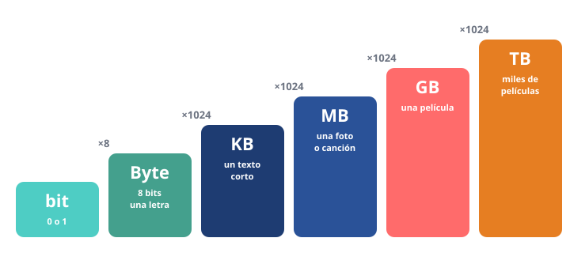

Módulo 4: Bits y bytes: medir la información
Aprende las unidades que verás en móviles, archivos y tarifas de datos.
Informática básica · Módulo 4 de 12
Todo son ceros y unos
Dentro del ordenador toda la información (textos, fotos, música, vídeos) se guarda como combinaciones de 0 y 1. Cada 0 o 1 es un bit, la unidad más pequeña. Ocho bits forman un byte, que es más o menos lo que ocupa una letra.

Cada escalón es unas mil veces más grande que el anterior.
| Unidad | Equivale a | Ejemplo |
|---|---|---|
| 1 byte (B) | 8 bits | una letra |
| 1 kilobyte (KB) | 1024 bytes | un texto corto |
| 1 megabyte (MB) | 1024 KB | una foto o una canción (3–5 MB) |
| 1 gigabyte (GB) | 1024 MB | una película (1–4 GB) |
| 1 terabyte (TB) | 1024 GB | cientos de miles de fotos |
¿1000 o 1024? Los ordenadores cuentan en potencias de 2 (1024), pero los fabricantes de discos usan 1000. Por eso un disco «de 1 TB» aparece en Windows como unos 931 GB: no falta espacio, solo se cuenta distinto.
Ojo con la «b»: las velocidades de Internet se miden en bits por segundo (Mb/s, con «b» minúscula). Una fibra de 600 Mb/s descarga como mucho unos 75 MB por segundo (600 ÷ 8).
🧮 Calcula
1) ¿Cuántos MB son 3 GB? (usa 1 GB = 1024 MB)
2) Tu móvil tiene 64 GB libres y cada vídeo ocupa 2 GB. ¿Cuántos vídeos caben?
3) Una fibra de 300 Mb/s, ¿cuántos MB descarga como máximo por segundo?
🧩 ¿Qué es más grande?
Resumen: bit → byte (×8) → KB → MB → GB → TB (cada uno ×1024). Internet se mide en bits por segundo.